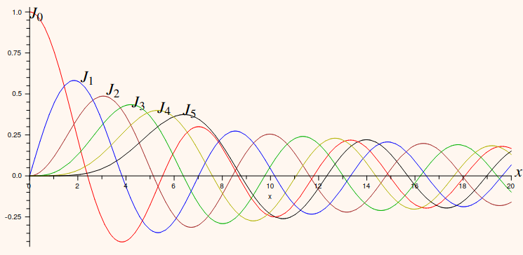
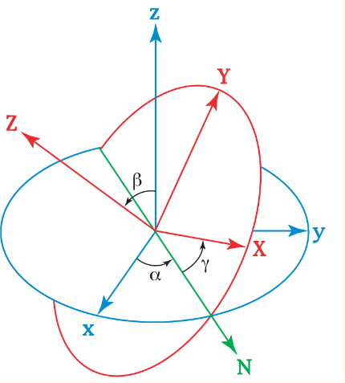
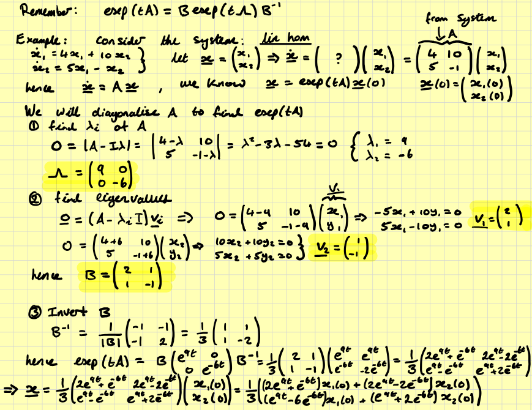
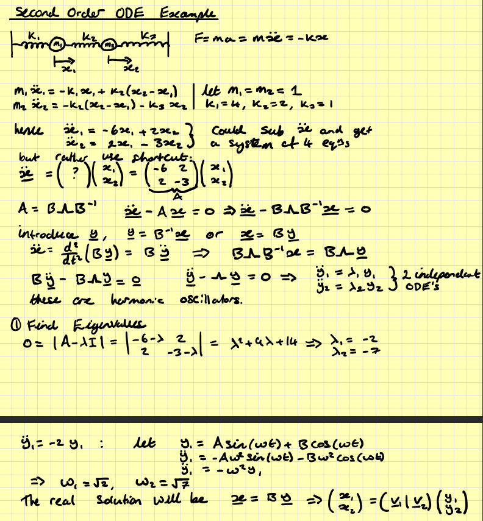

A linear ODE is defined using:
If the term contains one and only one factor which is a dependent variable or the derivative of a dependent variable then the term is linear in the dependent variable.
Furthermore, a linear homogeneous ODE is defined using:
If each term of the ODE is linear in the dependent variable or zero, then the ODE is linear homogeneous.
Example: \[\frac{d^2x}{dt^2}+a(t)\frac{dx}{dt}+x(t)=0\]
Definition:
If you can write each equation in a form where the left hand side is a linear homogeneous ODE, and the right hand side is non zero and does not contain any dependent variables or their derivatives, then the ODE is linear inhomogeneous.
Example: \[\frac{d^2x}{dt^2}+a(t)\frac{dx}{dt}+x(t)=b(t)+\sin(t)\]
All other ODEs are non linear
Example: \[\left(\frac{dx}{dt}\right)^2+a(t)\frac{dx}{dt}+x(t)=0\] NOTE: These classifications also apply to partial differential equations, as the only difference is the quantity of independent variables, not dependent. Also, \(\nabla\) is a linear operator, such that it may be in linear ODEs.
Linear homogeneous ODEs have two important properties.
The homogeneous part of a linear inhomogeneous equation is obtained by setting all the terms not containing a dependent variable to zero.
Lets learn this by example. Take the wave equation in \((t,x)\). \[\frac{\partial^2\psi}{\partial t^2}-\frac{\partial^2\psi}{\partial x^2}=0\] Now we propose the following ansatz: \[\psi(t,x)=\alpha(t)\beta(x)\] We can derive that \[\frac{d^2\alpha(t)}{dt^2}\frac{1}{\alpha(t)}=\frac{d^2\beta(x)}{dx^2}\frac{1}{\beta(x)}\] This is the crucial part. We can observe that the LHS depends only on \(t\), while the RHS depends only on \(x\). Therefore they must equal each other \(\forall (x,t)\), hence they must equal a constant. \[\implies\frac{d^2\alpha}{dt^2}\frac{1}{\alpha}=\frac{d^2\beta}{dx^2}\frac{1}{\beta}=C,\] where \(C\) is called the constant of separation.
We can choose the form of the constant of separation, and here we should choose \(C=-\omega^2\). Thus we find: \[\frac{d^2\alpha}{dt^2}\frac{1}{\alpha}=-\omega^2\qquad\qquad\frac{d^2\beta}{dx^2}\frac{1}{\beta}=-\omega^2\] Thus: \[\begin{align} \alpha=A\cos(\omega t)+B\sin(\omega t)\\\beta=C\cos(\omega x)+D\sin(\omega x) \end{align}\] ...and since \(\psi(t,x)=\alpha(t)\beta(x)\): \[\psi(t,x)=\left[A\cos(\omega t)+B\sin(\omega t)\right]\left[C\cos(\omega x)+D\sin(\omega x)\right]\] Note that this is equivalent to: \[\begin{align} &\psi(t,x)=A\cos(\omega t)\cos(\omega x)+B\cos(\omega t)D\sin(\omega x)\\ &+C\sin(\omega t)\cos(\omega x) + D\sin(\omega t)\sin(\omega x) \end{align}\] where the constants are redefined. These are the general solutions to the equation.
We use these with the general solution to find that \[\begin{align} &A=0,\qquad C=0,\qquad\sin(\omega L)=0\\ &\implies\omega_n=\frac{\pi n}{L},\;\;n\in\mathbb{Z}^+ \end{align}\] Since the wave equation is homogeneous linear we can add arbitrary solutions with different \(\omega\). Thus the solution for the specified boundary conditions is given by: \[\psi(t,x)=\sum^\infty_{n-1}\left(B_n\cos\left(\frac{\pi n}{L}t\right)\sin\left(\frac{\pi n}{L}x\right)+D_n\sin\left(\frac{\pi n}{L}t\right)\sin\left(\frac{\pi n}{L}x\right)\right)\] Now we can apply the initial conditions to further simplify the solution. We set \(t=0\) and also differentiate the result and set \(t=0\) to find: \[\psi_0(x)=\sum^\infty_{n=1}B_n\sin\left(\frac{n\pi}{L}x\right)\] \[\psi_1(x)=\sum^\infty_{n=1}\frac{n\pi}{L}D_n\sin\left(\frac{n\pi}{L}x\right)\] We now use the fact that \[\frac{2}{L}\int^L_0\sin\left(\frac{n\pi}{L}x\right)\sin\left(\frac{m\pi}{L}x\right)\;dx=\left\{ \begin{align} &1\;\;\;\;\textrm{if}\;n=m\\ &0\;\;\;\;\textrm{if}\;n\neq m \end{align}\right.\] to rearrange \(\psi_0\) to find: \[B_m=\frac{2}{L}\int^L_0\sin\left(\frac{m\pi}{L}x\right)\psi_0(x)\;dx\] We can do the same technique with \(\psi_1\) to get: \[D_m=\frac{2}{m\pi}\int^L_0\sin\left(\frac{m\pi}{L}x\right)\psi_1(x)\;dx\] So we can get the general solution: \[\psi(t,x)=\sum_{n=1}^\infty B_n\cos\left(\frac{n\pi}{L}t\right)\sin\left(\frac{n\pi}{L}x\right)+\sum_{n=1}^\infty D_n\sin\left(\frac{n\pi}{L}t\right)\sin\left(\frac{n\pi}{L}x\right)\] where \[\begin{align} &B_n=\frac{2}{L}\int^L_0\sin\left(\frac{n\pi}{L}x\right)\psi_0(x)\;dx\\ &D_n=\frac{2}{n\pi}\int^L_0\sin\left(\frac{n\pi}{L}x\right)\psi_1(x)\;dx \end{align}\]
Recall this from PHYS115: \[\Delta\psi=\frac{1}{r^2}\frac{\partial}{\partial r}\left(r^2\frac{\partial\psi}{\partial r}\right)+\frac{1}{r^2\sin\theta}\frac{\partial}{\partial\theta}\left(\sin\theta\frac{\partial\psi}{\partial\theta}\right)+\frac{1}{r^2\sin^2\theta}\frac{\partial^2\psi}{\partial\phi^2}\] We can rewrite this as \[\Delta\psi=\frac{1}{r^2}\frac{\partial}{\partial r}\left(r^2\frac{\partial\psi}{\partial r}\right)+\frac{1}{r^2}\Delta_{\textrm{sph}}\psi\] where \[\Delta_{\textrm{sph}}\psi=\frac{1}{\sin\theta}\frac{\partial}{\partial\theta}\left(\sin\theta\frac{\partial\psi}{\partial\theta}\right)+\frac{1}{\sin^2\theta}\frac{\partial^2\psi}{\partial\phi^2}\] is the Laplace operator on the sphere.
First we shall solve the spherical wave equation \[\frac{\partial^2\psi}{\partial t^2}-\Delta_{\textrm{sph}}\psi=0\qquad\textrm{for}\qquad\psi=\psi(t,\theta,\phi)\]
We shall separate \(t\), first then \((\theta,\phi)\). Thus let \(\psi(t,\theta,\phi)=\alpha(t)+\Upsilon(\theta,\phi)\) \[\implies\frac{d^2\alpha}{dt^2}+\omega^2\alpha=0\qquad\&\qquad\Delta_\textrm{sph}\Upsilon+\omega^2\Upsilon=0\] hence, the \(\alpha\) equation is solved for fixed frequency by setting \[\alpha(t)=A_\omega\cos(\omega t)+B_\omega\sin(\omega t)\] For the \(\Upsilon\) equation, we shall set \(\omega^2=n(n+1)\) where \(n\) is an integer. (This is dictated later). \[\frac{1}{\sin\theta}\frac{\partial}{\partial\theta}\left(\sin\theta\frac{\partial\Upsilon}{\partial\theta}\right)+\frac{1}{\sin^2\theta}\frac{\partial^2\Upsilon}{\partial\phi^2}+n(n+1)\Upsilon=0\] We shall again use a separation of variables, and set \(\Upsilon(\theta,\phi)=W(\theta)V(\phi)\) \[\implies\frac{1}{\sin\theta}\frac{d}{d\theta}\left(\sin\theta\frac{dW}{d\theta}\right)+\left(n(n+1)-\frac{m^2}{\sin^2\theta}\right)W=0\] and \[\frac{d^2V}{d\phi^2}+m^2V=0\] The latter is clearly another simple harmonic oscillator, however the boundary conditions are now periodic since \(\phi\) is an angle. Thus \[V(\phi)=V(\phi+2\pi)\] The previous sine and cosine solutions do not work in this case, so we adopt the exponential form \[V(\phi)=Ae^{im\phi}+Be^{-im\phi}\]
As for the former equation we need to convert to the associated Legendre equation.
This is the Associated Legendre Equation. Since \(P\) clearly depends on \(n\) and \(m\) as well as \(z\), we write \(P_n^m(z)\). Thus we have the A.L.E. \[\frac{d}{dz}\left((1-z^2)\frac{dP^m_n}{dz}\right)+\left(n(n+1)-\frac{m^2}{1-z^2}\right)P_n^m=0\] This is a second order linear ODE. Therefore there are two solutions.
Up to \(\pm 1\) the spherical harmonics are given by \[Y^m_n(\theta,\phi)=\left(\frac{2n+1}{4\pi}\frac{(n-m)!}{(n+m)!}\right)^{1/2}e^{im\phi}P_n^m(\cos\theta)\] where \(P^m_n\) is as above. The solution to the wave equation for \(\psi=\psi(t,\theta,\phi)\) is \[\psi=\sum^\infty_{n=0}\sum^n_{m=-n}\left(A_{mn}\cos\left(\sqrt{n(n+1)t}\right)+B_{nm}\sin\left(\sqrt{n(n+1)t}\right)\right)Y^m_n(\theta,\phi)\]
Laplace's Equation for \(\psi(r,\theta,\phi)\) is \[\Delta\psi=0\] We can use the definition of the Laplacian in spherical coordinates as given above and use \[\Delta_\textrm{sph}Y^m_n=-n(n+1)Y^m_n\] with the separation of variables \(\psi(r,\theta,\phi)=R(r)\Upsilon(\theta,\phi)\) to find the radial equation \[\frac{d}{dr}\left(r^2\frac{dR}{dr}\right)=n(n+1)R\] We now use the ansatz \(R(r)=r^\alpha\). \[\implies\alpha(\alpha+1)=n(n+1)\] hence \(\alpha=n\) and \(\alpha=-n-1\). Therefore the solution to Laplace's equation is \[\psi(r,\theta,\phi)=\sum^\infty_{n=0}\sum^n_{m=-n}B_{nm}r^{-n-q}Y^m_n(\theta,\phi)\]
The wave equation on the disc for the scalar \(\psi=\psi(t,\rho,\theta)\) is given by \[\frac{\partial^2\psi}{\partial t^2}-\Delta_\textrm{disc}\psi=0\] where the Laplace operator in plane polar coordinates is \[\Delta_\textrm{disc}\psi=\frac{1}{\rho}\frac{\partial}{\partial\rho}\left(\rho\frac{\partial\psi}{\partial\rho}\right)+\frac{1}{\rho^2}\frac{\partial^2\psi}{\partial\theta^2}\] Again, we use separation of variables \(\psi=\alpha(t)\mathcal{J}(\rho,\theta)\) to give \[\frac{d^2\alpha}{dt^2}+\omega^2\alpha=0\qquad\&\qquad\Delta_\textrm{disc}\mathcal{J}(\rho,\theta)+\omega^2\mathcal{J}=0\] We are then left with the equation using the disk Laplace operator \[\Delta_\textrm{disc}\mathcal{J}=\frac{1}{\rho}\frac{\partial}{\partial\rho}\left(\rho\frac{\partial\mathcal{J}}{\partial\rho}\right)+\frac{1}{\rho^2}\frac{\partial^2\mathcal{J}}{\partial\theta^2}=-\omega^2\mathcal{J}\] where \(\mathcal{J}=\mathcal{J}(\rho,\theta)\). This we can solve by separation of variables, setting \(\mathcal{J}=P(\rho)W(\theta)\). Using \(-m^2\) as the constant of separation gives \[\begin{align} &\frac{d^2W}{d\theta^2}+m^2W=0\\ &\rho\frac{d}{d\rho}\left(\rho\frac{dP}{d\rho}\right)+(\omega^2\rho^2-m^2)P=0 \end{align}\] The solution to the first equation is \[W=A\cos(m\theta)+B\sin(m\theta)\] Since \(\theta\) is an angle, as before, \(m\in\mathbb{z}\). There is also a zero mode, when \(m=0\), so that \(W''=0\), which is solved by \[W=W_0=A_0+B_0\theta\] but from periodicity, \(B_0=0\).
We solve the second equation by transforming \(P(\rho)\) into Bessel's equations, by setting \(\rho=x/\omega\) and \(P(\rho)=y(x)\). Thus \[\frac{d}{d\rho}=\omega\frac{d}{dx}\] Giving \[x\frac{d}{dx}\left(x\frac{dy}{dx}\right)+(x^2-m^2)y=0\] where \(m\in\mathbb{z}\). This is Bessel's equation of order \(m\).
These are solved by Bessel functions. Since this equation is second order, we know that there are two solutions, \[y(x)=J_m(x)\qquad y(x)=Y_m(x)\] respectively called Bessel functions of the first and second kind. In the limit \(x\to0\), \(J_m\) is a finite quantity, whereas \(Y_m\to-\infty\).
Since \(x=0\) corresponds to \(\rho=0\), we require the coefficient of \(Y_m\) be zero. Thus \(y(x)=AJ_m(x)\).
After long calculation, it can be shown that \[J_m(x)=\sum^\infty_{s=0}\frac{(-1)^sx^{m+2s}}{2^{m+2s}s!(m+s)!}\] Plotting the first six Bessel functions (of the first kind) gives:

Hence, for a fixed frequency \(\omega\), our solutions to \(\Delta_\textrm{disk}\mathcal{J}=-\omega^2\mathcal{J}\) are: \[\begin{array}{c} \mathcal{J}(\rho,\theta)=\cos(m\theta)J_m(\omega\rho)\\ \mathcal{J}(\rho,\theta)=\sin(m\theta)J_m(\omega\rho)\\ \implies\mathcal{J}=A\cos(m\theta)J_m(\omega\rho)+B\sin(m\theta)J_m(\omega\rho)\end{array}\] Solving the \(\alpha\) is trivial, it its a simple harmonic oscillator again, where the steps to solve are detailed above. We get \[\alpha(t)=C\cos(\omega t)+D\sin(\omega t)\] Thus, the solutions to the wave equation \(\frac{\partial^2\psi}{\partial t^2}+\Delta_\textrm{disk}\psi=0\) are \[\begin{array}{l} \psi(t,\rho,\theta)=\alpha(t)\mathcal{J}(\rho,\theta)\\ \implies\psi=[A\cos(m\theta)J_m(\omega\rho)+B\sin(m\theta)J_m(\omega\rho)][C\cos(\omega t)+D\sin(\omega t)] \end{array}\]
Now we must involve boundary conditions to find the possible values of \(\omega\).
Thus \[\psi=\sum^\infty_{m=0}\sum^\infty_{d=0}\left(\left[A_{ms}\cos(m\theta)J_m\left(\frac{\chi^s_m}{R}\rho\right)+B_{ms}\sin(m\theta)J_m\left(\frac{\chi^s_m}{R}\rho\right)\right]\left[C_{ms}\cos\left(\frac{\chi^s_m}{R} t\right)+D_{ms}\sin\left(\frac{\chi^s_m}{R} t\right)\right]\right)\] where \(A_{ms},\;B_{ms},\;C_{ms},\;D_{ms}\) are determined by the initial conditions.
We can promote \(\psi(t,\rho,\theta)\to\psi(t,\rho,\theta,z)\) so that \[\frac{\partial^2\psi}{\partial t^2}-\Delta_\textrm{disk}\psi\quad\to\quad\frac{\partial^2\psi}{\partial t^2}-\Delta_\textrm{disk}\psi-\frac{\partial^2\psi}{\partial z^2}=0\] we can use SOV again with \(\psi=\alpha(t)\beta(\rho,\theta)\gamma(z)\), to show that \[\begin{array} &\frac{d^2\alpha}{dt^2}=-\omega^2\alpha\quad &\Delta_\textrm{disk}\beta=-k^2\beta\quad &\frac{d^2\gamma}{dz^2}=\varepsilon\mu^2\gamma \end{array}\] with \(k=\chi^s_m/R\), \(\varepsilon=\pm1\) and \(\omega^2=k^2-\varepsilon\mu^2\). The sign of \(\varepsilon\) determine if the waves are propagating or non propagating.
We will write \(A\in M_{m\times n}(\mathbb{R})\) to mean \(A\) is an \(m\times n\) real matrix with \(m\) rows and \(n\) columns, and \(A\in M_{m\times n}(\mathbb{C})\) to mean the corresponding complex matrix.
Two matrices \(A\) and \(B\) may be added to form a matrix \(C\) ONLY IF \(m_A=m_B\) and \(n_A=n_B\). \[C=A+B\] To perform this, simply add the \((i,j)\)th element of the first matrix to the \((i,j)\)th element of the second matrix to also get the \((i,j)\)th element of the third matrix.
A matrix may be multiplied by a scalar by simply multiplying each element by the scalar. \[\lambda\begin{pmatrix}a&b\\d&e\end{pmatrix}=\begin{pmatrix}\lambda a&\lambda b\\\lambda d&\lambda e\end{pmatrix}\] Matrix multiplication is more complicated. For \(A\in M_{m,n},\;B\in M_{r,s}\) we require that \(n=r\), and the resulting matrix will be \(AB\in M_{m,s}\) .
A trick to remember this is that for \(M_{m,n},\;M_{r,s}\) the inside indices must be the same, and the result will be of dimensions of the outside indices. \[\begin{pmatrix} a&b&c\\d&e&f \end{pmatrix}\begin{pmatrix} g&h\\i&j\\k&l \end{pmatrix}=\begin{pmatrix} A&B\\C&D \end{pmatrix}\] where \[\begin{align} &A=ag+bi+ck\\ &B=ah+bj+cl\\ &C=dg+ei+fk\\ &D=dh+ej+fl \end{align}\] We have multiplied two matrices by taking the dot product of the \(m\)th row of the first matrix by the \(n\)'th column of the second matrix, to give the corresponding \((m,n)\)th entry of the result.
Some set notation: \(A\in\mathbb{C}\), A is in the set of complex numbers. \(\{1,2,3\}\subset\mathbb{R}\), \(\{1,2,3\}\) is a subset of the real numbers. To notate a real \(n\)-vector, we write \(A\in\mathbb{R}^n\).
Given a matrix \(A\), we represent the \((i,j)\)'th entry by the symbol \(A_{ij}\).
So for matrix multiplication we can find that \[(AB)_{ij}=\sum^n_{k=1}A_{ik}B_{kj}\] where \(A\in M_{a,n},\;B\in M_{n, b}\). Where \(a,b\) are arbitrary constants.
Remember the identity matrix is \[I_n=\pmatrix{ 1&0&\ldots&0\\ 0&1&\ddots&\vdots\\ \vdots&\ddots&1&0\\ 0&\ldots&0&1 }\in M_{n\times n}(\mathbb{R})\] In components, \[(I_n)_{ij}=\left\{\begin{align}&1\quad \textrm{if}\;i=j\\&0\quad\textrm{if}\;i\neq j\end{align}\right.\quad =\delta_{ij}\] This is very useful in index notation proofs.
For addition and scalar multiplication, the algebraic rules are nothing special. There is associativity, addition of zero, distributivity and commutativity. Its more complicated for matrix multiplication:
The trace of a square matrix is simply the sum of the diagonal entries. \[\textrm{Tr}\pmatrix{ A_{11}&\ldots&A_{1n}\\ \vdots&\ddots&\vdots\\ A_{n1}&\ldots&A_{nn} }=\sum^n_{i=1}A_{ii}\] The trace is a linear transformation, which means that
Given two square matrices \(A,B\in M_{n\times n}(\mathbb{R})\) we define the commutator as \[[A,B]=AB-BA\in M_{n\times n}(\mathbb{R})\] There are two main rules
The Leibniz rule can be extended to find: \([AB,CD]=AC[B,D]+A[B,C]D+C[A,D]B+[A,C]BD\)
Let \(A\in M_{n\times n}(\mathbb{R})\) be matrix.
For \(M_{2\times 2}(\mathbb{R})\) matrices, there exists a simple formula for the inverse. \[\textrm{Given}\;A=\pmatrix{a&b\\c&d}\implies A^{-1}=\frac{1}{ad-bc}\pmatrix{d&-b\\-c&a}\] where \(ad-bc=\det(A)\) is the determinant.
We can use the inverse of a matrix to solve matrix equations. For example consider the matrix equation \[AB=C.\] Find \(B\) \[B=A^{-1}C\] If A is not a square matrix or if A doesn’t have an inverse then interesting things can happen: either the equation has no solutions or it has more than one solution. We will consider these cases later.
The inverse of \(A\) is given by Cramer's formula: \[(A^{-1})_{ij}=\frac{1}{\det(A)}\textrm{cof}(A)_{ji}\]
It is simple for small matrices.
For matrices bigger than \(2\times 2\), the determinant is given by \[\det(A)=\sum^n_{r=1}A_{1r}\textrm{cof}(A)_{1r}\] Thus for a \(3\times 3\) matrix, \(A\in M_{3\times 3}(\mathbb{R})\), \[\det(A)=\left|\matrix{a&b&c\\d&e&f\\g&h&i}\right|=a\left|\matrix{e&f\\h&i}\right|-b\left|\matrix{d&f\\g&i}\right|-c\left|\matrix{d&e\\g&h}\right|\]
To define the cofactor, we need to first define the minor. For the matrix \(A\), each element \(A_{ij}\), its minor \(M(A,i,j)\) is found by removing the \(i\)th row and \(j\)th column of \(A\) and returning the remaining matrix. I.e. for \(i=2\), \(j=3\), \[A=\pmatrix{a&b&c\\d&e&f\\g&h&i}\implies M(A,2,3)=\pmatrix{a&b\\g&h}\] Now, the cofactor is defined as \[\textrm{cof}(A)_{rs}=(-1)^{r+s}\det(M(A,r,s))\] Thus for \(A\) above, \[\textrm{cof}(A)_{23}=(-1)^{2+3}\det(M(A,2,3))=-\left|\matrix{a&b\\g&h}\right|\]
Given a matrix \(A\in M_{m\times n}(\mathbb{R})\), then the transpose of \(A\) is given by \(A^T\in M_{n\times m}(\mathbb{R})\) \[(A^T)_{ij}=(A)_{ji}\] We are "flipping" the matrix along the main diagonal.
A square matrix \(A\in M_{n\times n}(\mathbb{R})\) is called symmetric if \[A^T=A\] They are used as metrics (definition of distance) in relativity. A square matrix \(A\in M_{n\times n}(\mathbb{R})\) is called orthogonal if \[A^TA=I_n\]
All results regarding addition, multiplication, and multiplying by a scalar are equally true for real and complex matrices. Other operations such as finding eigenvalues and taking scalar products are different.
Given a vector \(\mathbf{v}\in\mathbb{R}^n\), its length is given by \[||\mathbf{v}||=\sqrt{v_1^2+v_2^2+\ldots+v_n^2}=\sqrt{\sum^n_{k=1}v^2_k}\] where we take the positive square root.
It can be shown that \(\mathbf{v}^T\mathbf{v}=||\mathbf{v}||^2\).
Given two vectors \(\mathbf{u},\;\mathbf{v}\in\mathbb{R}^n\), the dot product is given by \[\mathbf{u}\cdot\mathbf{v}=\mathbf{u}^T\mathbf{v}=\mathbf{v}^T\mathbf{u}=\sum^n_{k=1}u_kv_k\] The dot product is related to the angle (\(\theta\)) via the formula \[\cos\theta=\frac{\mathbf{u}\cdot\mathbf{v}}{||\mathbf{u}||\;||\mathbf{v}||}\] We say that the two vectors are orthogonal if the dot product is zero.
Given a square matrix \(A\in M_{n\times n}(\mathbb{R})\) we say that \(A\) is length preserving if:\[||A\mathbf{v}||=||\mathbf{v}||\qquad\forall\;\mathbf{v}\in\mathbb{R}^n\]
It can be proved that a matrix is length preserving if and only if it is orthogonal.
For an orthogonal matrix \(A\) we know \(A^TA=I\). Observe that \(\det(A)=\pm 1\) as: \[1=\det(I_n)=\det(A^TA)=\det(A)\det(A^T)=\det(A)^2\] Thus there are two types of orthogonal matrices:
All rotation matrices are of the form \[A=\pmatrix{\cos\theta&-\sin\theta\\\sin\theta&\cos\theta}\] for some angle \(0\leq\theta\leq 2\pi\). The matrix \(A\) rotates vectors anticlockwise through an angle of \(\theta\).
All reflection matrices are of the form \[A=\pmatrix{\cos(2\theta)&\sin(2\theta)\\ \sin(2\theta)&-\cos(2\theta)}\] for some angle \(0\leq\theta\leq\pi\). The matrix \(A\) reflects vectors about the line at angle \(\theta\).
A general rotation matrix is described by 3 Euler angles: \((\alpha,\beta,\gamma)\) where \(0\leq(\alpha,\gamma)\leq2\pi\) and \(0\leq\beta\leq\pi\).

The \(XYZ\) system is fixed, while the \(xyz\) system rotates.
A general rotation matrix can be written as the product of 3 \(M_{3\times 3}(\mathbb{R})\) matrices: \(A\mathbf{v}=A_3A_2A_1\mathbf{v}\). \[A=\pmatrix{ \cos\gamma&-\sin\gamma&0\\ \sin\gamma&\cos\gamma&0\\ 0&0&1 }\pmatrix{ 1&0&0\\ 0&\cos\beta&-\sin\beta\\ 0&\sin\beta&\cos\beta }\pmatrix{ \cos\alpha&-\sin\alpha&0\\ \sin\alpha&\cos\alpha&0\\ 0&0&1 }\] Note the operations are from right to left.
An arbitrary basis is any set of vectors \(\{\mathbf{x}_1,\ldots,\mathbf{x}_r\}\) with \(\mathbf{x}_k\in\mathbb{R}^n\) such that if \[\sum^r_{k=1}\lambda_k\mathbf{x}_k=0\quad\textrm{then}\quad\lambda_1=\lambda_2=\ldots=\lambda_r=0\] for any other vector \(\mathbf{v}\) there exists \(v_i\in\mathbb{R}\) such that \[\mathbf{v}=\sum^r_{k=1}v_k\mathbf{x}_k\] Even if the number of elements is \(r=n\), they you may not have a basis. A set \(\{\mathbf{x}_1,\ldots,\mathbf{x}_n\}\) is a basis for \(\mathbb{R}^n\) if and only if \[\left(\begin{array}{c|c|c} &&\\ \mathbf{x}_1 & \cdots & \mathbf{x}_n\\ && \end{array}\right)\] is non degenerate.
The length(norm) of a complex vector is defined using the complex conjugate: \[||\mathbf{v}||=\sqrt{\sum^n_{i=1}v^*_iv_i}\] where we take the positive square root.
Given the complex matrix \(A\in M_{m\times n}(\mathbb{C})\), we have \[(A^\dagger)_{ij}=A^*_{ji}\]
The scalar product of two complex vectors \(\mathbf{u},\mathbf{v}\in\mathbb{C}^n\) is given by: \[\langle\mathbf{u},\mathbf{v}\rangle=\mathbf{u}^\dagger\mathbf{v}\in\mathbb{C}\]
The natural basis \(\{\mathbf{e}_1,\ldots,\mathbf{e}_n\}\) remains an orthonormal basis for \(\mathbb{C}^n\). I.e. \(\langle\mathbf{e}_i,\mathbf{e}_j\rangle=\delta_{ij}\) .\[\mathbf{v}=\sum^n_{i=1}v_i\mathbf{e}_i\quad\textrm{and}\quad v_i=\langle\mathbf{e}_i,\mathbf{v}\rangle\] but note, in general: \(v_i\neq\langle\mathbf{v},\mathbf{e}_i\rangle\)
Given a square matrix \(A\in M_{n\times n}(\mathbb{C})\), the complex number \(\lambda\) is an eigenvalue of \(A\) with the corresponding eigenvector \(\mathbf{v}\in\mathbb{C}^n,\;\mathbf{v}\neq\mathbf{0}\) if it satisfies \[A\mathbf{v}=\lambda\mathbf{v}\]
Observe that if \(\mathbf{v}\) is an eigenvector then so is \(\mu\mathbf{v}\) for all \(\mu\neq 0\). We consider \(\mathbf{v}\) and \(\mu\mathbf{v}\) representing the same eigenvector.
Also note that \[\mathbf{0}=A\mathbf{v}-\lambda\mathbf{v}=(A-\lambda I)\mathbf{v}\] Since \(\mathbf{v}\) cannot equal \(\mathbf{0}\), the inverse of \((A-\lambda I)\) cannot exist, meaning that it is degenerate. Hence \[\boxed{\det(A-\lambda I)=0}\] Let \(p_A:\mathbb{R}\to\mathbb{R}\) be the polynomial \[p_A(\lambda)=(-1)^n\det(A-\lambda I)\] which is called the characteristic polynomial. We can set this to zero and solve for \(\lambda\) which will be an eigenvalue of \(A\). We can then use each eigenvalue \(\lambda_i\) to find the corresponding eigenvector using the homogeneous linear equation: \[(A-\lambda_iI)\mathbf{v}_i=\mathbf{0}\]
A (square) matrix \(A\in M_{n\times n}(\mathbb{C})\) is diagonalisable if there exists an invertible matrix \(B\in M_{n\times n}(\mathbb{C})\) and a diagonal matrix \(\Lambda\) such that \[A=B\Lambda B^{-1}\] Let \(B\in M_{n\times n}(\mathbb{C})\) be the matrix constructed from the eigenvectors of \(\mathbf{v}_1,\ldots,\mathbf{v}_n\) of \(A\), and let \(\Lambda\) be constructed from the eigenvalues: \[B=\left(\begin{array}{c|c|c} &&\\ \mathbf{v}_1 & \ldots & \mathbf{v}_n\\ &&\\ \end{array}\right) \quad\textrm{and}\quad \Lambda=\pmatrix{ \lambda_1 & & 0\\ & \ddots &\\ 0 & &\lambda_n }\]
Given two matrices \(A,C\in M_{n\times n}(\mathbb{C})\) is it possible to mutually diagonalise these matrices? E.g. \[A=B\Lambda B^{-1}\quad \textrm{and}\quad C=B\Gamma B^{-1}\] We can do this if both \(A\) and \(C\) are each diagonalisable and they commute: \[[A,C]=AC-CA=0\]In quantum mechanics if \(A\) and \(B\) commute, and are therefore mutually diagonalisable Hermitian matrices, then they represent physical quantities which can be “known” at the same time. I.e. measuring \(A\) and then \(B\) we get the same result as if we measured \(B\) and then \(A\).
Let a system of \(m\) linear equations with \(n\) unknowns. \[\begin{array}{c c c c} A_{11}x_1+&\ldots&+A_{1n}x_n&=b_1\\ \vdots & \vdots & \vdots & \vdots\\ A_{m1}x_1+&\ldots&+A_{mn}x_n&=b_m \end{array}\] or in matrix form \[A\mathbf{x}=\mathbf{b}\quad\implies\quad \pmatrix{ A_{11} & \ldots & A_{1n}\\ \vdots & \ddots & \vdots\\ A_{m1} & \ldots & A_{mn} }\pmatrix{ x_1\\ \vdots\\ x_n }=\pmatrix{ b_1\\ \vdots\\ b_m }\]
If \(A\) is non degenerate, \((\det(A)\neq 0)\), then \(A^{-1}\) exists, in which we can multiply both sides of the equation by it to solve for \(\mathbf{x}\) If \(\det(A)=0\), there are either many, or no solutions.
Given the linear system \(A\mathbf{x}=\mathbf{0}\), where \(A\in M_{m\times n}\mathbb(R)\) this is a homogeneous linear system of equations. The solution set is \[S=\{\mathbf{x}\in\mathbb{R}^n|A\mathbf{x}=\mathbf{0}_m\}\]
Hence we can present \(S\) as \[S=\left\{\lambda_1\mathbf{v}_1+\ldots+\lambda_r\mathbf{v}_r|\lambda_1,\ldots,\lambda_r\in\mathbb{R}\right\}\] for some vectors \(\mathbf{v}_1,\ldots\mathbf{v}_r\in\mathbb{R}^n\).
Given the linear system \(A\mathbf{x}=\mathbf{b}\), where \(\mathbf{b}\neq\mathbf{0}\), this is a inhomogeneous linear system of equations. The solution set is \[S=\{\mathbf{x}\in\mathbb{R}^n|A\mathbf{x}=\mathbf{b}\}\]
Hence we can present \(S\) as \[S=\left\{\lambda_1\mathbf{v}_1+\ldots+\lambda_r\mathbf{v}_r+\mathbf{z}|\lambda_1,\ldots,\lambda_r\in\mathbb{R}\right\}\] i.e. we need all of the solutions to the homogeneous equation and only one solution to the inhomogeneous equation.
Given a function \(x(t)\), and its derivatives \(\dot{x}\;\textrm{and}\;\ddot{x}\).
All linear homogeneous ODEs or system of ODEs can be written in the form \[\frac{d}{dt}\mathbf{x}(t)=A(t)\mathbf{x}(t)\] All linear inhomogeneous ODEs or system of ODEs can be written in the form \[\frac{d}{dt}\mathbf{x}(t)-A(t)\mathbf{x}(t)=\mathbf{b}(t)\] where \(\mathbf{b}(t)\) does not contain any dependent variable.
What happens when one of the equations contains higher derivatives, second order or above?We simply introduce a new dependent variable!I.e. \(x_1(t)=x(t)\), and \(x_2(t)=dx/dt=dx_1/dt\)
If we have a matrix ODE \[\frac{d\mathbf{x}}{dt}=A\mathbf{x}(t)\] where \(A\) is a constant matrix (not dependent of \(t\)), we say we have a linear homogeneous ODE with constant coefficients. We can always solve linear ODEs with constant coefficients. The solution is given by \[\mathbf{x}(t)=\exp(tA)\mathbf{x}(0)\] where we can use \[\exp(tA)=\sum_{r=0}^\infty\frac{t^rA^r}{r!}\]
There is no formula for \(\frac{d\mathbf{x}}{dt}=A(t)\mathbf{x}\)
To calculate \(\exp(tA)\) we diagonalise \(A\). Set \(A=B\Lambda B^{-1}\) then \[\exp(tA)=B\exp(t\Lambda)B^{-1}\] (since \(A^r=B\Lambda^rB^{-1}\)) This is simple as the diagonal matrix only contains entries on the diagonals, such that \[\exp(tA)=\pmatrix{e^{t\lambda_1} & & 0\\& \ddots &\\0 & & e^{t\lambda_n}}\]


The Dirac delta function is written \(\delta(x)\), where \(x\in\mathbb{R}\).